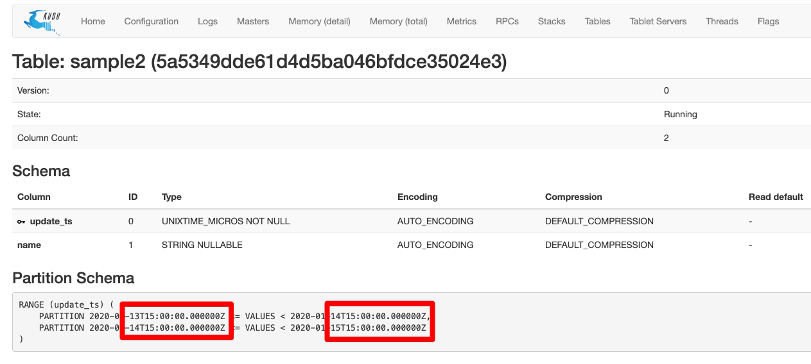

[Kudu] 시간 기준의 Range Partition 시 주의점(timezone, UTC)
Kudu는 시간 컬럼을 저장할 때 unixtime_micros를 이용해서 저장한다.
만약 이 컬럼을 통해 연도별,월별,일별 등 시간으로 Range Partition을 설정할 경우 주의할 점이 있다.
Kudu는 질의 엔진이 따로 포함되어 있지 않기 때문에 kudu-client 라이브러리를 사용하여 테이블 생성 및 파티션을 설정하거나, Impala Hive Presto 와 같은 질의엔진을 통해 CREATE TABLE DDL을 통해 테이블을 생성할 수 있다.
이때 질의 엔진을 통해 테이블을 생성할 경우 주의해야 한다.
만약 아래와 같이 날짜를 기준으로 파티션을 했다고 가정해보자.
-- query with presto
CREATE TABLE sample (
update_ts timestamp WITH ( primary_key = true ),
name varchar WITH ( nullable = true )
)
WITH (
number_of_replicas = 1,
partition_by_range_columns = ARRAY['update_ts'],
range_partitions = '[
{"lower":"2020-01-14T00:00:00.000Z","upper":"2020-01-15T00:00:00.000Z"}
,{"lower":"2020-01-15T00:00:00.000Z","upper":"2020-01-16T00:00:00.000Z"}
]'
)
위와 같이 만들고 아래와 같은 코드로 row1, row2의 데이터를 집어넣어보면
KuduClient client = new KuduClient.KuduClientBuilder("master server").build();
LocalDateTime currentDate = LocalDateTime.now();
//현재 날짜 : 2020-01-14T14:00:50.897
System.out.println(currentDate);
KuduTable table = client.openTable("sample");
KuduSession session = client.newSession();
//현재시간으로 데이터 삽입
Insert insert1 = table.newInsert();
PartialRow row1 = insert1.getRow();
row1.addTimestamp("update_ts", Timestamp.valueOf(currentDate));
row1.addString("name", "row1");
//현재시간보다 6시간 이전 시간으로 데이터 삽입
Insert insert2 = table.newInsert();
PartialRow row2 = insert2.getRow();
row2.addTimestamp("update_ts", Timestamp.valueOf(currentDate.minusHours(6)));
row2.addString("name", "row2");
session.apply(insert1);
session.apply(insert2);
row1과 row2 데이터가 들어가 있어야 할것 같지만 실제로는
presto:> select * from sample
-> ;
update_ts | name
-------------------------+------
2020-01-14 14:01:20.949 | row1
row1 데이터만 들어간것을 볼수 있다.
왜 그럴까?
데이터가 저장되지 않은 row2를 보면,
row2.addTimestamp(“update_ts”, Timestamp.valueOf(currentDate.minusHours(6))); ==> 현재시간(14:00) - 6시간 = AM 8시
range partition의 대상이 되는 컬럼인 update_ts는 오전 8시가 된다.
Kudu는 시간 기준의 Range Partition을 구성할때 UTC시간으로 계산하고, 대한민국은 UTC+9 시간이기 때문에
update_ts(AM 8시) - 9시간 = 13일 23시
로 파티션을 선택하여 저장하게 된다.
우리는 위의 DDL에서 14일, 15일에 대한 파티션만 지정했음으로, 13일 23시의 데이터는 저장하고자 하는 파티션이 없기 때문에 저장이 안되고 없어지게 된다.
어떻게 해결할까?
해결책은 단순하다.
Range Partition을 설정할때 2020-01-14T00:00:00.000Z 으로 설정하는 것이 아니라 -9 시간을 한
2020-01-13T15:00:00.000Z 로 설정하면 된다.
이 글의 초반에도 이야기 했지만, 위와 같은 이슈는 질의엔진을 통해 테이블을 생성할 때 발생되는 이슈이고, 만약 kudu-client를 이용해서 코드를 통해 테이블을 생성한다면 자동으로 지정시간 - 9로 자동으로 설정되기 때문에 따로 주의하지 않아도 된다.
KuduClient client = new KuduClient.KuduClientBuilder("kudu master").build();
Schema schema = new Schema(Arrays.asList(
new ColumnSchema.ColumnSchemaBuilder("update_ts", Type.UNIXTIME_MICROS).key(true).build()
, new ColumnSchema.ColumnSchemaBuilder("name", Type.STRING).nullable(true).build()
));
CreateTableOptions cto = new CreateTableOptions();
//14일, 15일 16일의 PartialRow를 만들고
//14~15일, 15~16일 파티션을 생성한다.
List<PartialRow> rangePartitions = IntStream.rangeClosed(14, 16).mapToObj(date ->{
PartialRow row = schema.newPartialRow();
row.addTimestamp("update_ts", Timestamp.valueOf(LocalDateTime.parse("2020-01-" + date + " 00:00:00", DateTimeFormatter.ofPattern("yyyy-MM-dd HH:mm:ss"))));
return row;
}).collect(Collectors.toList());
cto.setRangePartitionColumns(Arrays.asList("update_ts"));
cto.addRangePartition(rangePartitions.get(0), rangePartitions.get(1));
cto.addRangePartition(rangePartitions.get(1), rangePartitions.get(2));
client.createTable("sample2", schema, cto);

Value는 변경없이 그대로 저장이 되기 때문에 timezone과 상관없이 사용하면 된다.